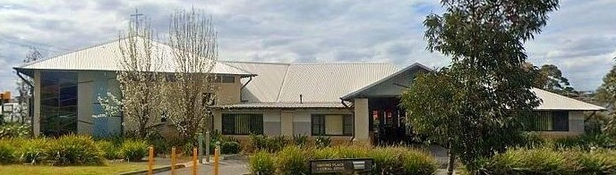

Who We Are

Hampton Park Uniting Place is a congregation of the Uniting Church in Australia, located in the heart of Hampton Park in Melbourne's south-east. We are a diverse, welcoming community of people who share a commitment to following Jesus and serving those around us.
We believe that faith is not just something practised within church walls — it is lived out in everyday acts of love, service, hospitality, and justice in our local community and beyond.
Our Mission Statement
"To be a community of Jesus followers putting faith into action — where each lives for the other, and all live for God."
This statement reflects our core conviction: that being church is fundamentally about community — with God, with one another, and with our neighbours. We exist not for ourselves but for the world God loves.
Our Values
Welcome
Every person is made in the image of God and deserves to be received with dignity and respect.
Service
Following Jesus means giving of ourselves for the good of others — locally and globally.
Community
We are stronger together. We share life — joys, struggles, meals, and purpose.
Justice
We work towards a world where all people can flourish, and we speak up for those who cannot.
Our History
Hampton Park Uniting Place has served the Hampton Park community for many decades. From its beginnings as a small congregation, it has grown into a vibrant community hub that serves hundreds of local residents each week through worship, programs, and community support.
As part of the Uniting Church in Australia — formed in 1977 through the union of the Methodist, Presbyterian, and Congregational churches — we carry a rich heritage of faith, service, and social concern.
Our Connection to the Uniting Church
We are part of the Uniting Church in Australia's Synod of Victoria and Tasmania. The Uniting Church is Australia's third-largest Christian denomination and is committed to being an inclusive, reconciling, and justice-seeking community of faith.
Visit the Synod of Victoria and Tasmania ›